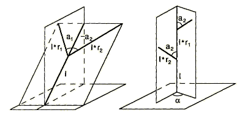
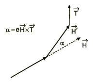

|
| [3.1. Monopodiale Verzweigung] |
| [3.2. Sympodiale Verzweigung] |
| [3.3. Tropismus und ternäre Verzweigung] |
Die lange Vorgeschichte zur Simulation von verzweigten Strukturen liegt vor allem in zellulären Automaten, die zelluläres Wachstum modellieren und stetig ausgebaut und auf 3 Dimensionen ausgeweitet wurden. Diese Technik beruht auf Interaktion zwischen Zellen einer wachsenden Struktur, wie auch zwischen der Struktur und der Umgebung. Da diese Interaktion die Komplexität der Modelle deutlich erhöht, greift man heutzutage mehr auf simple zurück, obwohl diese entscheidende Umweltfaktoren nicht berücksichtigen. Die erste Art von Baummodellen wurde von Honda vorgeschlagen, die folgende vereinfachenden Kriterien erfüllt:
Abb. 3.1: Gerüste für Baummodelle nach Honda

Allein die Veränderung obiger Parameter lieferte Honda eine große Anzahl von unterschiedlichen Strukturen (siehe Kapitel 3.1. und 3.2.). Seine Modelle wurden immer weiter verbessert und von Aono und Kunii neue Erweiterungen, wie die Berücksichtigung von Wind, Phototropismus und Schwerkraft, eingeführt, die Zweige in bestimmte Richtungen neigten (siehe Kapitel 3.3.).
Auch im Aussehen der Äste, die anfangs nur als Linien mit bestimmter Dicke definiert waren und so "Baumskellette" formten, wurde eine neue Entwicklung eingeschlagen, indem man gebogene und texturierte Zweige und Blätter einführte (siehe Titelbild). Später entstanden auch stochastische Modelle, die eher nur baumähnliche Strukturen waren, aber in Massen zusammengesetzt ein realistisches Bild ergaben, obwohl man dabei auf biologische Details wenig Rücksicht nahm (Abb. 3.2).
Die Anwendung von L-Systemen auf Baummodelle wurde als erstes von Aono und Kunii in Betracht gezogen. Sie fanden, dass die originale Definition von L-Systemen ungeeignet für Bäume schien, ließen in ihrer Argumentation aber parametrische L-Systeme ausser acht, die sehr wohl für primitive Bäume geeignet sind.
 |
3.1. Monopodiale Verzweigung |
|
Z.B. sieht man in Abb. 3.3 die Simulation von Honda'schen Baummodellen durch L-Systeme, wobei ein Verzweigungswinkel (a1) 0° hat. Das heißt, dass sie monopodiale Strukturen mit genau definierten Hauptstämmen und Nebenzweigen darstellen.
Honda'sche monopodiale Baumstrukturen
| w | A(1,10) |
| p1 | A(l,w) → !(w)F(l)[&(a0)B(l·r2,w·wr)]/(d)A(l·r1,w·wr) |
| p2 | B(l,w) → !(w)F(l)[-(a2)$C(l·r2,w·wr)]C(l·r1,w·wr) |
| p3 | C(l,w) → !(w)F(l)[+(a2)$B(l·r2,w·wr)]B(l·r1,w·wr) |
| r1 | Siehe Tabelle |
| r2 | Siehe Tabelle |
| a0 | Siehe Tabelle |
| a2 | Siehe Tabelle |
| d | 137.5 |
| wr | 0.707 |
| Figur (Abb. 3.3) | r1 | r2 | a0 | a2 |
|---|---|---|---|---|
| links oben | 0.9 | 0.6 | 45 | 45 |
| rechts oben | 0.9 | 0.9 | 45 | 45 |
| links unten | 0.9 | 0.8 | 45 | 45 |
| rechts unten | 0.9 | 0.7 | 30 | -30 |
Regel p1 erzeugt auf der Spitze der Hauptachse in jeder Iteration ein Segment F und einen Knotenpunkt B. Die Konstanten r1 und r2 sind Kontraktionsfaktoren für Haupt- bzw. Nebenzweige, a0 und a2 sind die Verzweigungswinkel und d=137.5° der Divergenzwinkel. Das Modul !(w) setzt die Liniendicke auf w, die in jedem Tochtersegment um wr=0.707 verkürzt wird. Dieser Faktor entspricht einem Postulat von Leonardo da Vinci, wonach gilt: die Summe der Dicke aller Zweige eines Baumes bei jeder Höhe entspricht der Dicke des Mutterzweiges. Im Fall von 2 Tochterzweigen mit Durchmesser w2 und einem Mutterzweig mit w1 ergibt sich die Gleichung w1² = 2w2², weiters der Verkürzungsfaktor wr, für den
w2/w1 = 1/√(2) ≈ 0.707 gilt.
L = (V × H)/(|V × H|) und U = H × L
entsprechend, wobei V die der Gravitation entgegengesetzte Richtung ist.
|
3.2. Sympodiale Verzweigung |
|
Eine leicht veränderte Verzweigungsform zeigt die sympodiale Verzweigung, wo beide Tochtersegmente Winkel ungleich Null zum Muttersegment aufweisen. Daraus ergibt sich eine scheinbar gebogene Stammform bei kleinen a1, wie Abb. 3.4 zeigt.
Sympodiale Baumstrukturen nach Aono und Kunii
| w | A(1,10) |
| p1 | A(l,w) → !(w)F(l)[&(a1)B(l·r1,w·wr)]/(180)[&(a2)B(l·r2,w·wr)] |
| p2 | B(l,w) → !(w)F(l)[+(a1)$B(l·r1,w·wr)][-(a2)$B(l·r2,w·wr)] |
| r1 | Siehe Tabelle |
| r2 | Siehe Tabelle |
| a0 | Siehe Tabelle |
| a2 | Siehe Tabelle |
| wr | 0.707 |
| Figur (Abb. 3.4) | r1 | r2 | a0 | a2 |
|---|---|---|---|---|
| links oben | 0.9 | 0.7 | 5 | 65 |
| rechts oben | 0.9 | 0.7 | 10 | 60 |
| links unten | 0.9 | 0.8 | 20 | 50 |
| rechts unten | 0.9 | 0.8 | 35 | 35 |
Bei diesen Baummodellen beschränkt sich die Aktivität des Hauptsegments auf die Bildung des Stammes und zweier Nebenäste, was in p2 beschrieben wird.
|
3.3. Tropismus und ternäre Verzweigung |
 |
Im folgenden Modell wird wirkliches Wachstum -wie in Kapitel 2.7.2. angerissen- modelliert. Dabei werden die bisherigen Stauchungs- zu Streckungsfaktoren (d.h. die Faktoren erhalten Werte >1).
Abb. 3.5: Tropismus

Außerdem wird hier der Einfluss einer Kraft durch einen Tropismusvektor T berücksichtigt, der alle Äste wie in Abb. 3.5 abbiegt und so den Vektor H zu H´verändert. Soll der reine Einfluss der Schwerkraft dargestellt werden, gilt
T = [0,-1,0] .Bei Phototropismus -also Wachstumseinfluss durch Licht- oder anderen Tropismen verändert sich dieser Vektor. Die Werte e und a ergeben sich aus H und T.
Ternär verzweigte Bäume
| w | !(1)F(200)/(45)A |
| p1 | A(l,w) → !(vr)F(50)[&(a)F(50)A]/(d1)[&(a)F(50)A]/(d2)[&(a)F(50)A] |
| p2 | B(l,w) → !(w)F(l)[-(a2)$C(l·r2,w·wr)]C(l·r1,w·wr) |
| p3 | C(l,w) → !(w)F(l)[+(a2)$B(l·r2,w·wr)]B(l·r1,w·wr) |
| d1 | Siehe Tabelle |
| d2 | Siehe Tabelle |
| a | Siehe Tabelle |
| lr | Siehe Tabelle |
| vr | 1.732 |
| Figur (Abb. 3.6) | d1 | d2 | a | lr | T | e | n |
|---|---|---|---|---|---|---|---|
| links oben | 94.74 | 132.6 | 18.95 | 1.109 | [0/-1/0] | 0.22 | 6 |
| rechts oben | 137.5 | 137.5 | 18.95 | 1.109 | [0/-1/0] | 0.14 | 8 |
| links unten | 112.5 | 137.5 | 22.5 | 1.790 | [-0.02/-1 /0] | 0.27 | 8 |
| rechts unten | 180 | 252 | 26 | 1.070 | [-0.61/0.77/-0.19] | 0.40 | 6 |
Der Streckfaktor vr=1.732 lässt sich wiederum aus da Vincis Postulat (siehe Kapitel 3.1.) ableiten:
w1² = 3w2²
vr = w1/w2 = √(3) ≈ 1.732
Die Bildung von 3 neuen Ästen nennt sich ternäre Verzweigung.
Die stetigen Vergrößerungen der Längen und Durchmesser werden durch die Regeln p2 bzw. p3 erfasst.